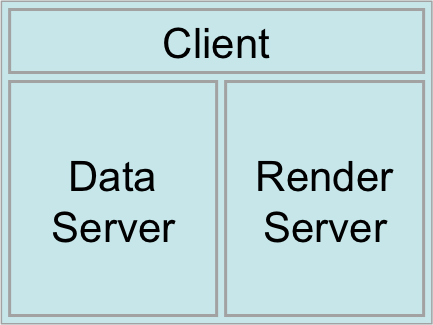
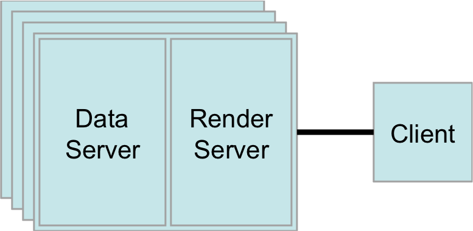
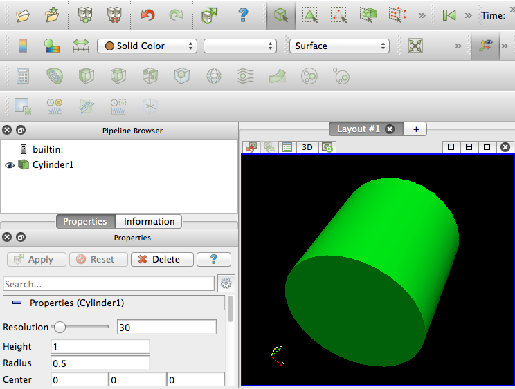
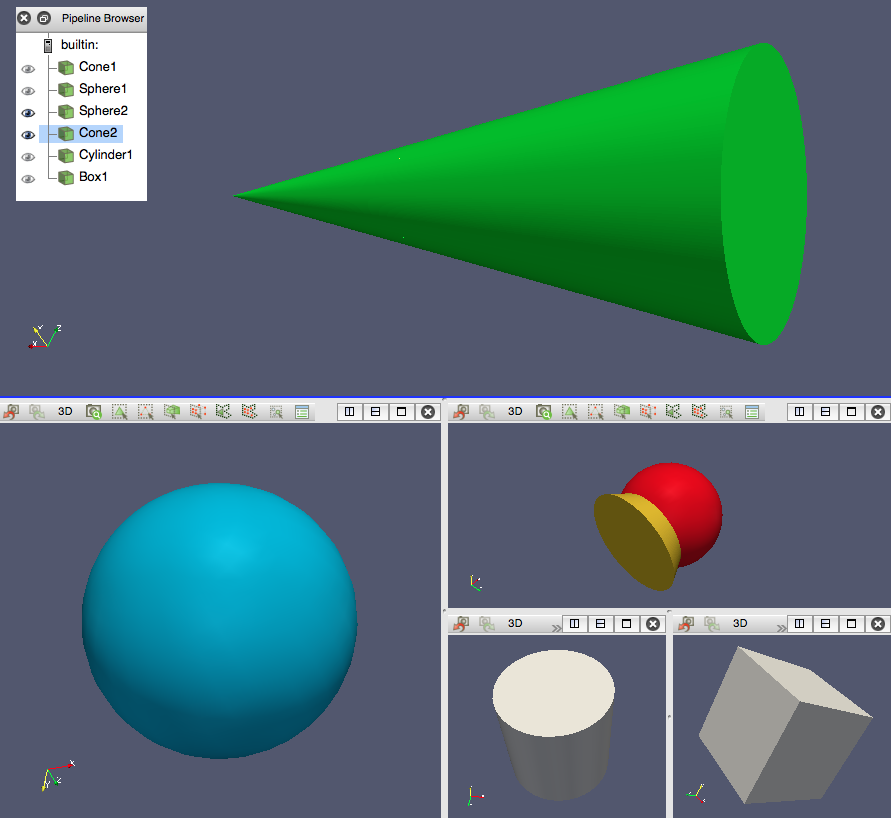

Architecture et interface graphique#
Architecture parallèle distribuée#
ParaView comprend trois composants logiques qui sont intégrés dans une même application à utiliser sur un ordinateur personnel, mais qui peuvent également s’exécuter séparément sur des machines différentes :
Serveur de données – composant responsable de la lecture, du filtrage et de l’écriture des données. Tous les objets du pipeline visibles dans l’explorateur de pipelines sont contenus dans le serveur de données. Ce serveur peut être exécuté en parallèle.
Serveur de rendu – composant responsable du rendu. Le serveur de rendu peut également être parallèle.
Client – composant responsable de la visualisation. Le client contrôle la création, l’exécution et la destruction des objets sur les serveurs, mais ne contient aucune donnée, ce qui permet aux serveurs de prendre toute la charge. Si une interface graphique est présente, elle se trouve également du côté client. Le client est toujours une application séquentielle.
Il y a deux principaux modes d’utilisation :
{kind=link}

Les calculs et l’interface utilisateur s’exécutent sur le même ordinateur (local ou distant).

Une instance parallèle de pvserver s’exécute à distance sur un
serveur multicœur ou sur une grappe de calcul.
Or, le mode autonome est limité par l’ordinateur utilisé :
Bande-passante de la lecture des données ;
Mémoire système ;
Puissance CPU / GPU.
Par exemple, un ordinateur doté de 48 Go de mémoire pourrait traiter des modèles jusqu’à \(2048^3\) valeurs, mais sous certaines conditions :
les valeurs sont à virgule flottante à simple précision …
sur des grilles structurées …
stockées localement (faible latence).
Ainsi, un tel ordinateur ne pourrait traiter :
des données plus larges ou de plus haute résolution ;
des grilles plus complexes ;
des données nécessitant des filtres complexes.
Par exemple, une simulation d’écoulement d’air autour d’une aile d’avion
sur une grille non structurée ayant \(246\times10^6\) cellules
(\(\sim627^3\)) est un problème typique qui ne tiendrait pas sur un
ordinateur de 48 Go : une seule variable contenant tout le modèle prendrait
déjà 25 Go. Par contre, il serait possible de visualiser ce modèle
interactivement à distance sur un serveur de 64 cœurs avec un processus
pvserver prenant environ 120 Go de mémoire.
Pour cet atelier d’introduction, nous allons nous contenter du mode autonome.
Démarrer ParaView#
Selon l’environnement utilisé, voici comment démarrer ParaView :
Séance JupyterLab sur les grappes de l’Alliance :
Linux/Unix : entrer
paraviewà la ligne de commande.MacOS : cliquer sur ParaView dans les Applications.
Windows : sélectionner ParaView dans le menu Démarrer.
L’interface graphique de ParaView devrait apparaître. En arrière-plan, un
processus pvserver est démarré automatiquement.
Survol de l’interface graphique#
Pipeline Browser :
Arborescence de lecteurs et de filtres de données ;
Permet d’activer ou de désactiver la visibilité de chaque objet.
Inspecteur d’objet : via les onglets Properties et Information, voir et modifier les paramètres de l’objet sélectionné dans le pipeline.
Fenêtre de visualisation : affiche le résultat.

Pour vous familiariser :
Dans la barre d’outils, trouvez les boutons :
Connect
Disconnect
Toggle Color Legend Visibility
Edit Color Map
Rescale to Data Range
Chargez un ensemble de données prédéfini : menu Sources \(\rightarrow\) Geometric Shapes \(\rightarrow\) Cylinder.
Essayez de bouger le cylindre en appuyant sur le bouton gauche de la souris ; essayez aussi avec le bouton droit et le bouton central.
Familiarisez-vous avec le menu contextuel ; changez la Representation du cylindre (par exemple, de Surface à Wireframe) ou changez sa couleur via Edit Color.
Exercice – Fenêtres de visualisation#
Objectif : créer de multiples fenêtres de visualisation et, pour chacune d’entre elles, configurer les propriétés des objets du pipeline.
Instructions
Ajoutez un objet du menu Sources (cone, sphere, cylinder ou box) et éditez ses propriétés.
Utilisez un des boutons en haut à droite de la fenêtre de visualisation pour diviser la vue.
Répétez avec l’objet ou les objets suivants.
Liez deux vues : bouton droit de souris sur une vue, sélectionnez Link Camera et cliquez sur une autre vue.
